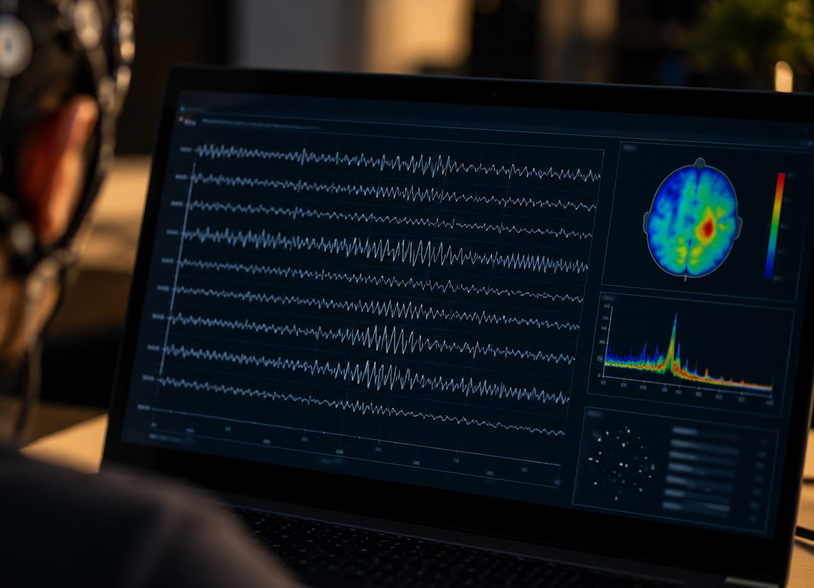

OUR FOCUS

A Brain-Computer Interface is a computer interface which is used for reading an individual's neuro data.
Dureja 2025 wrote neuro data is electrical signals in the brain. Neuro data is collected then processed and translated by BCIs into commands for computer interfaces to understand. This then allows users to control things as small as a cursor to something as complex as a robotic limb. BCIs can be surgically implanted into brain tissues and they can be used as wearable devices such as hats.
We will be investigating the human trials, individual patient's achievements, technological achievements, risks and benefits, and claims made by developers about what will be possible for patients with neurological conditions like severe paralysis and locked-in syndrome in the future.
We won't be examining the deep science behind how BCIs are created, or the exact process behind how BCIs process biological brain signals and decode them into physical commands. Instead our focus is on the physical outcomes from past human trials and potential outcomes in future human trials. We will look at what has been achieved to better understand what will be possible to achieve, when it will be possible achieve, and to better understand if the risks are greater than the benefits for future patients who want to benefite from these types of procedures.